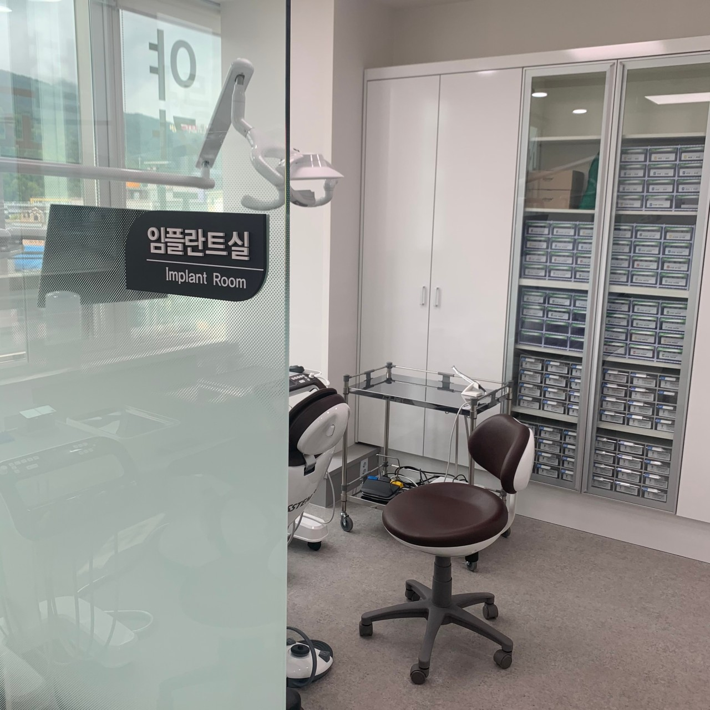
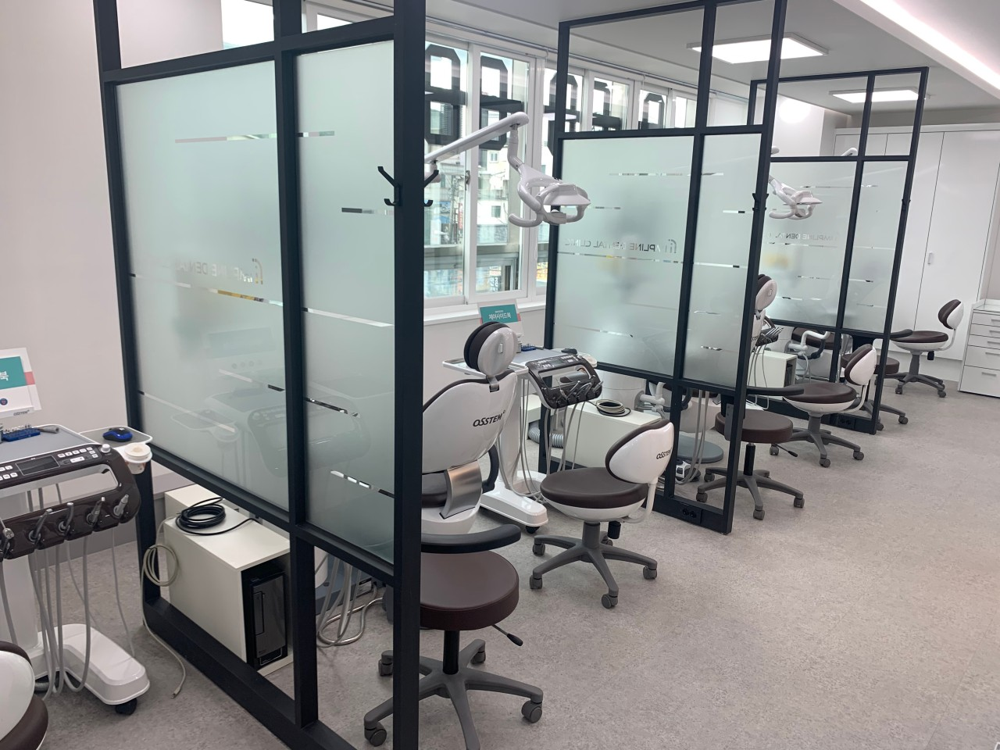

임플란트는
집도의의 임상 경험이
매우 중요합니다.
안전하고 만족스러운 치료 결과를 제공하기 위해 끊임없이 노력합니다.

대학병원급 장비와 전문 시스템
첨단 진단 장비를 활용하여 더욱 정밀하고
안전한 임플란트 수술을 진행합니다.
임플라인치과 임플란트의 특별함
전문의 책임진료 및 수술
보건복지부 인증 통합치의학과 전문의가 진단부터 수술까지 책임진료를 진행합니다.

첨단 정밀 진단 시스템
3D CT와 최신 장비로 정밀한 진단과 치료 계획을 수립합니다.

철저한 멸균 소독 시스템
대학병원급 철저한 소독 시스템으로 교차 감염을 예방합니다.

임플란트 치료과정

정밀 진단 및 1:1 맞춤 상담
환자의 구강 및 잇몸 상태를 면밀히 파악하여 개인별 맞춤 치료 계획을 수립합니다.
마취 단계 (수면마취 가능)
환자의 상태와 시술 범위에 따라 통증 없는 수면마취 또는 일반 국소 마취를 진행합니다.
안전하고 신속한 임플란트 수술
풍부한 임상경험을 가진 전문의가 고난도 수술 등 환자 상태에 맞는 최적의 임플란트 식립 수술을 진행합니다.
사후관리 및 주기적인 검진
정기적인 검진과 스케일링으로 임플란트 치아를 오래도록 편안하게 유지할 수 있도록 관리합니다.
의식하 진정요법(수면) 임플란트
- 치과 공포증 치과 치료에 대한 두려움으로 치료를 망설이시는 분
- 전신질환 및 노약자 고혈압, 당뇨 등 전신질환이 있거나 체력이 약하신 분
- 다수 치아 상실 여러 개의 임플란트를 한 번에 수술해야 하는 분
- 빠른 치료를 원하시는 분 바쁜 일정으로 빠른 시간 내에 치료를 마치고 싶으신 분
만 65세 이상,
보험 임플란트
만 65세 이상 어르신이라면 임플란트 건강보험 혜택으로 비용 부담을 크게 줄일 수 있습니다.
임플란트 수술 후 주의사항
물려드린 거즈는 약 2시간 동안 꽉 물고 계시고 침과 피는 뱉지 말고 삼켜주세요.
처방받은 약은 항생제가 포함되어 있으므로 지시대로 끝까지 복용해 주셔야 합니다.
수술 후 2일간은 수술 부위 뺨 쪽에 10분 간격으로 냉찜질을 해주시면 붓기 제거에 도움이 됩니다.
술, 담배는 임플란트 주위 뼈 형성을 방해하고 염증을 유발하므로 최소 한 달은 금해주세요.
맵고 자극적인 식사는 피하시고 수술 후 당분간 부드러운 유동식을 드시기 바랍니다.
수술 부위를 손가락이나 혀로 건드리지 마시고 양치질은 수술 부위를 피해서 살살 해주세요.
자주 묻는 질문
환자의 뼈 상태에 따라 다르지만 보통 3개월~6개월 정도 소요됩니다. 뼈 이식이 필요한 경우 기간이 추가될 수 있습니다.
임플란트는 자연치아와 같이 관리에 따라 반영구적으로 사용할 수 있습니다.